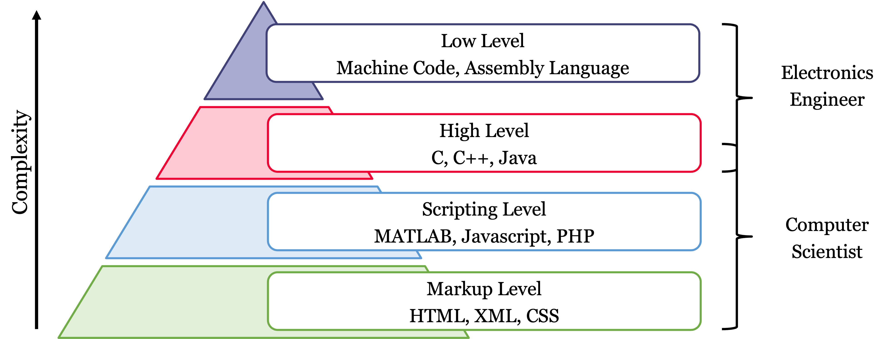
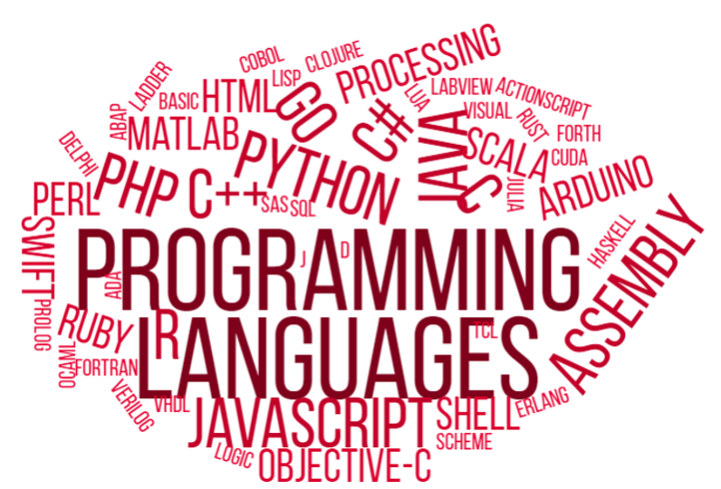
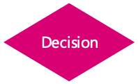
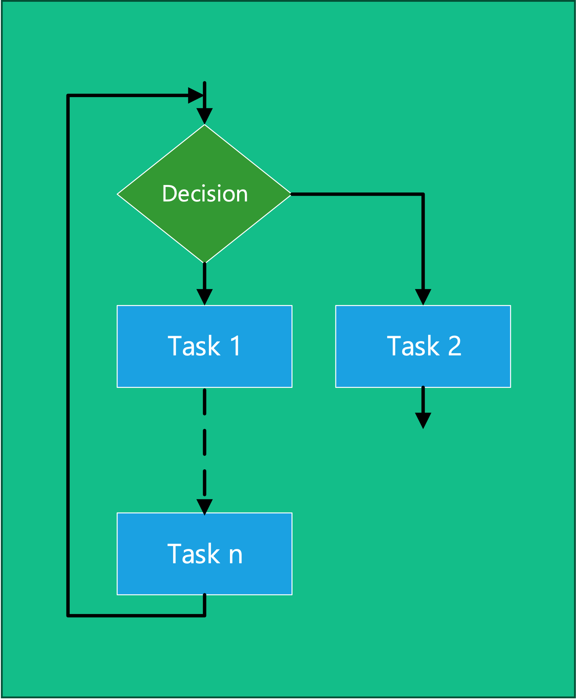
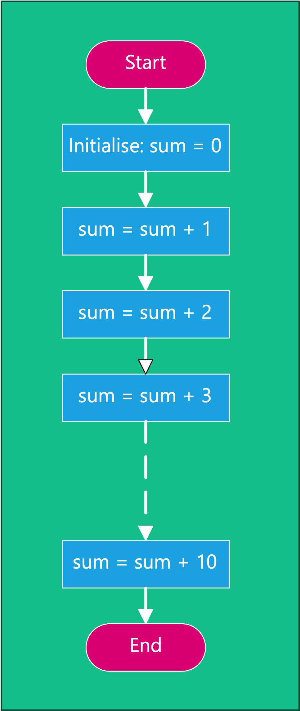
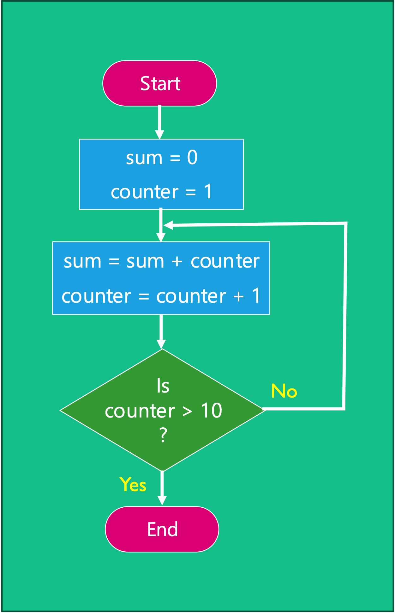

Introduction to Programming and Program Development
Welsh Centre for Printing and Coatings
Tuesday October 15, 2024

Introduction
When developing an application to run on a microcontroller or other embedded system, there are five key steps which should be followed:
- Clearly define the requirements of the system, planning the number of inputs and outputs required, speed, storage etc. to identify suitable hardware candidates.
- Plan/design the software using flowcharts and pseudocode to describe the program and identify functions, or blocks of code, and how they link to other blocks.
- Translate the flowchart into the required programming language.
- Once the program is at a level where its functionality can start to be tested, testing and debugging is performed to look for errors or unexpected behaviour in software called bugs.
- When the final software is commissioned, it is important to document the code so as a developer can come back to it at later date or pass the task to another team member.
Lecture Topics

Useful Terminology
Hello, World!
/*
* This line basically imports the "stdio" header file, part of
* the standard library. It provides input and output functionallity
* to the program.
*/
# include <stdio.h>
/*
* Function (method) declaration. This outputs "Hello, world\n" to
* standard output when invoked.
*/
void sayHello(void) {
// printf() in C outputs the specified text (with optional
// formatting options) when invoked.
printf("Hello, world\n");
}
/*
* This is a "main function"/ The compiled program will run the code
* defined here.
*/
int main(void) {
// invoke the sayHello() function.
sayHello();
return 0;
}What is a program?
A program or algorithm is a recorded sequence of instructions that performs a task or set of tasks when executed to produce a specific result.
What is software?
Software is the term used to describe collections of programs, libraries, and related data.
What is a programming language?
A programming language is a formal notation comprising a set of instructions and rules for writing programs.
Development of programming
Figure 1: IBM type 704 electronic data processing machine used for making computations for aeronautical research at NASA Langley Research Center – 21st March 1957. (Image source: www.flickr.com/photos/nasacommons/9467782802)
Figure 2: Early program source code! Input into a computer with punched paper tape. Image Source: How it was: Paper tapes and punched cards | EETimes
Figure 3: Writing programs on a modern high resolution display screen. (Image source: unsplash.com/photos/ieic5Tq8YMk by Chris Reid)
Programming Languages
Programming Language Level vs Complexity
Figure 4: Programming language level versus complexity
Programming levels
Figure 5: Word cloud of common programming languages
High-level languages
- High level languages are written in a form that is close to human language, enabling the programmer to just focus on the problem being solved without any knowledge of the hardware it is running on.
- Examples include: C++, Java, Pascal, Python, Visual Basic.
Low-level languages
- Low level languages are used to write programs that relate to the specific architecture and hardware of a particular type of computer and are much closer to the native language of a computer (binary).
- Examples include: Assembly Language, Machine Code
The C Programming language
C is a general-purpose computer programming language. It was created in the 1970s by Dennis Ritchie, and remains very widely used and influential. Wikipedia - C (programming language)
- C might be described as a “mid-level language”. It is a compiled language and it has features that allow code to be written at a fair distance from the machine instructions. At the same time it provides structures that allow the detailed manipulation of data, memory and I/O at a level that is quite close to the machine.
- In this course, we will be using a dialect of C that has been specifically designed for the programming of Arduino devices such as the 8-bit Atmel ATmega328 which is used in the Arduino Nano.
- C is a very influential language. It is still used widely for writing operating system kernels, command-line tools, hardware drivers, and microcontroller applications. The syntax of C is the basis of many of the compiled and interpreted high-level languages that are in use today.
Flowcharts
What is a Flowchart?
A flowchart is a pictorial representation of the logic flow through a program.
Flowcharts are a useful tool for planning, visualizing and documenting a program without having to write any code.
Basic flowcharts are convenient because they
- Don’t require the viewer to have an in-depth knowledge of programming
- Don’t require the viewer to have knowledge of a specific programming language
- Useful for visualizing how blocks of code interact with one another
- Can be a useful tool in identifying flaws and bottlenecks in large and complex algorithms
Flowcharts vs Code
|
Bash (a command-line shell used in Unix and MacOS) |
BASIC |
|
MATLAB |
Python |
|
C (for Arduino) |
C++ |
|
HTML |
JavaScript |
Flowchart building blocks
Terminal: start/end block

Suprocess block

Terminal: program flow

Decision block

Process block

I/O block

Rules for drawing flowcharts
- Flowcharts are usually drawn top to bottom but can be also be drawn left to right.
- Flowcharts must begin with a “start” symbol and finish with an “end” symbol.
- The spacing between all items should be consistent
- The direction of flow between each block should be indicated with an arrow.
- Connecting lines should never overlap.
In short flow charts should look visually tidy and the program flow should be obvious to the viewer.
Flowchart Drawing Packages
Microsoft Visio (Windows and web only)
Microsoft 365
Other flowchart drawing tools

{kind=link}
Creately
Web-based drawing tool
Using flowcharts to capturing the most common program constructs
From a software designer’s point of view, any program function can be described using only three program constructs:
- Sequence: this construct performs one task after another in a sequence. It is a group of instructions to be performed one after another in the order shown in the program.
- Decision: this construct performs a task or a sequence of tasks based on the result of a test condition.
- Repetition: this construct is for a process that repeats until a condition which will stop the process is satisfied2. Repetition is used to repeat a a sequence over and over again.
Sequence
Decision

Figure 12: Flowchart for a decision
Repetition
Figure 13: Flowchart for a sequence of tasks
Example Programs
Example 1: A sequence
Task: Find the sum of the numbers 1 to 10
Program design method 1:
- Brute force method using the Sequence construct,
- Add number 1 to sum, then add, number 2, then add number 3 …
- Continue the process until all numbers are added!
Solution to task as a sequence
Figure 14 shows the flow chart of this program.
Figure 14: Flowchart of a program to sum the first 10 numbers written as a sequence.
Program shown in Figure 14 written in pseudo code
START
sum = 0
sum = sum + 1
sum = sum + 2
sum = sum + 3
sum = sum + 4
sum = sum + 5
sum = sum + 6
sum = sum + 7
sum = sum + 8
sum = sum + 9
sum = sum + 10
ENDExample 2: Decision and a Loop
Task: Find the sum of numbers 1 to 10
Program design method 2:
- Use the decision and repetition constructs:
Solution to task 1 using a decision and repetition
Figure 15 shows the solution of task 1 using a decision and repetition.
Figure 15: Flowchart of the solution to task 1 using a decision and repetition.
Program shown in Figure 15 written in pseudo code
START
sum = 0
counter = 1
WHILE counter < 11
DO
sum = sum + counter
counter = counter + 1
END_DO
ENDAnother Example Program
Consider a program that asks a user for a ‘limit’ value and sums the numbers up to that limit before outputting the sum?
I.e. \(\mathrm{sum} = 1 + 2 + 3 + \dots n\)
Figure 16: A program that asks for a limit value and sums numbers up to that limit before outputting the sum.
Let us tabulate the results of this program assuming that \(n=4\).
We will complete the table in class:
sum |
counter |
counter > limit |
|---|---|---|
| \(0\) | \(1\) | No |
| \(2\) | ||
| \(3\) | ||
| \(4\) | ||
| \(5\) |
How many ways can we write the same program?
For our program summing the numbers up to a limit, there are three key parts.
- Sum (S):
sum = sum + counter - Increment (I):
counter = counter + 1 - Check (C): Has condition been met?
| Variation | Part 1 | Part 2 | Part 3 |
|---|---|---|---|
| 1 | C | S | I |
| 2 | C | I | S |
| 3 | I | C | S |
| 4 | I | S | C |
| 5 | S | C | I |
| 6 | S | I | C |

Figure 17: Variation 6: Sum - Increment - Check

Figure 18: Variation 4: Increment - Sum - Check
Figure 19: Variation 2: Check - Increment - Sum
Any more?
What if we counted backawards from \(n\)?
\[\mathrm{sum} = 1 + 2 + 3 + \cdots + \left(n - 1\right) + n\]
\[\equiv\]
\[\mathrm{sum} = n + \left(n-1\right) + \cdots 3 + 2 + 1\]
Let us tabulate the results of this program assuming that \(n=4\).
sum |
counter |
counter > limit |
|---|---|---|
| \(0\) | \(4\) | |
| \(3\) | ||
| \(2\) | ||
| \(1\) | ||
| \(0\) |
A flow chart that implements this variation is given in Figure 20.
Figure 20: Another variation: Check - Decrement - Sum
Self-directed learning
- See if you can write the other eight flowcharts for a program that sums the numbers 1 to n.
- To get you thinking from a programmer’s point of view, consider the steps required to perform a task we usually take for granted, such as making a cup of tea, and what a flowchart for this might look like.
- After you’ve had a go at these, drop a message on the discussion forum for this week to let us know how you got on and which drawing package you found the best. Feel free to include any tips you find useful.
Modular Programming
What is a module?
The basic approach to modularization is to consider a top-down design where the top level defines the main function, and a separate module represents each smaller function in the program (see Figure 21).

Example Task
Write a program to perform n different tasks with a ten second delay between each task.
The program we have been discussing that sums the numbers 1-10 can be used to simulate a delay.
Example program - Non-Modular Approach
DO
Task 1
END
/* Delay between task 1 and task 2 */
DO
number = 0
WHILE number < 11
DO
number = number + 1
END_DO
END_WHILE
END
DO
Task 2
END
/* Delay between task 2 and task 3 */
DO
number = 0
WHILE number < 11
DO
number = number + 1
END_DO
END_WHILE
END
DO
Task 3
END
:Change the specification
Now suppose that we want to change the delay between tasks to 20 seconds.
Using a non-modular approach the developer/programmer now needs to change the line
WHILE number < 11to
WHILE number < 21For each of the n-1 times it is used.
Example program - Modular Approach
The code that implements the delay is made into a module which is called when needed
MODULE delay
DO
number = 0
WHILE number < 21
DO
number = number + 1
END_DO
END_WHILE
END
END_MODULEThe modular program becomes:
DO
Task 1
END
/* Delay between task 1 and task 2 */
DO
delay
END
DO
Task 2
END
/* Delay between task 2 and task 3 */
DO
delay
END
DO
Task 3
END
:Activity
With the time remaining can you represent this program as a flow chart?
Feel free to work individually or in small groups.
Solution
See Figure 22 in the notes online.
Summary
In this chapter we have:
- Defined terminology relating to programming and looked at how languages can be classified as high or low based on the level of abstraction from the architecture it is to be run on.
- Looked at flowcharts defining the standard symbols and looking at how they are used to represent a program.
- Looked at some example programs presented as flow charts and in pseudo code.
- Noted that there may be more than one way to present a program to achieve the same results.
- Introduced the use of sub-processes to allow modular programming for splitting up a program or repeating common elements.
On Canvas
This week on the canvas course page, there is:
Any Questions?
Please use the Course Question Board on Canvas or take advantage of the lecturers’ office hours.
Next time
Footnotes
In most programming languages, text is stored in memory as a sequence of binary codes which each represent the individual characters as in
'H','e','l','l','o',',',' ','W','o','r','l','d','!'. Such a sequence is usually called a string.Repetition is used a lot in microcontroller programming.
Pseudocode is a formal text which is used to represent the operation of a section of code in a way that can be understood without needing to resort to formal rules of a programming language.
In science, computing, and engineering, a black box is a system which can be viewed in terms of its inputs and outputs (or transfer characteristics), without any knowledge of its internal workings. Its implementation is “opaque” (black). The term can be used to refer to many inner workings, such as those of a transistor, an engine, an algorithm, the human brain, or an institution or government.—Blackbox (Wikipedia)